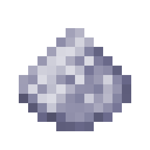
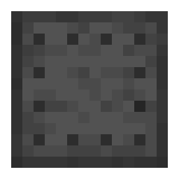
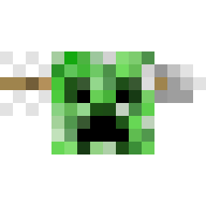
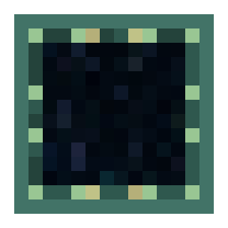

Better Wandering Trader
1.15 +
With this Datapack you get a lot of small useful Things, which you can trade from Wandering Trader. This Items are all only obtainable through him.
The Wandering Trade also will become a neutral Mob. That means if you provoke him, he will attack you.
But this is not the only punishment for attacking him. The harder one is, that you need to wait much longer until a new Wandering Trader spawns.
The Items which you can buy are spitted into three rarity degrees. The common Item Names are Yellow, the rare ones blue and the epic are purple.
In the Inventory of the Trader the first four Trades are common, the next two rare and the last one is epic.
Also the hole spawning System of the Wandering Trader gets an overwork. Now a Wandering Trader will spawn all five days next to a random Player, which hasn't hitted a Trader. He will despawn after two Days.
Common Trades
Death Coords |
|
 |
Toggle Day Time |
 |
Toggle Weather |
 |
Horse Upgrade: Health |
|
Horse Upgrade: Speed |
|
Horse Upgrade: Jump Strength |
|  | Bone Dust |
Vanilla Minecraft Trades:
Kelp
Rare Trades
XP Cost Reducer |
|
 |
Item Magnet |
|  | Anvil Repair |
 |
Nether Gate |
Vanilla Minecraft Trades:
Bamboo
Slimeball
Epic Trades
 |
Spawner Breaker |
|  | Creeper Disruptor |
|  | End Gate |
Vanilla Minecraft Trades:
Turtle Egg
Settings
Disable custom Spawning. Afterward the Wandering Trader will spawn like normal, but he will still have the custom Trades.
/scoreboard players set #spawn_normal usftrader 1/reload
Disable trades. Replace #id with the small written id which is next to the Name of the Item in the Trades Spoiler.
/scoreboard players set #id usftrader 1
To enable the Setting again you need to execute the same Command except of the 1 replace with a 0.